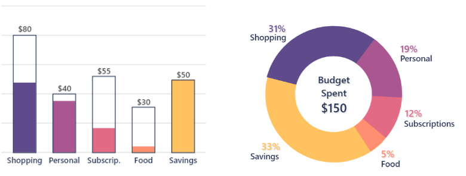
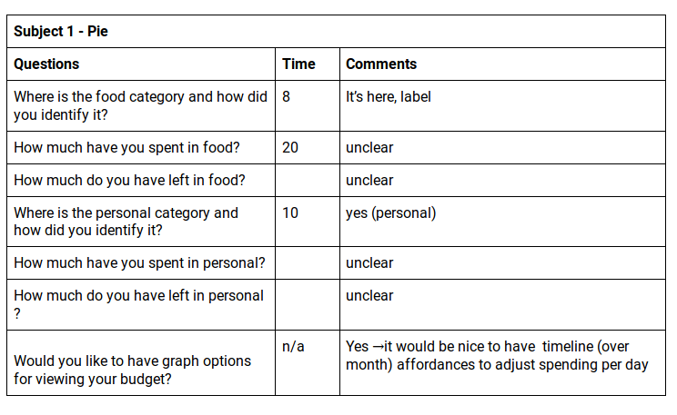
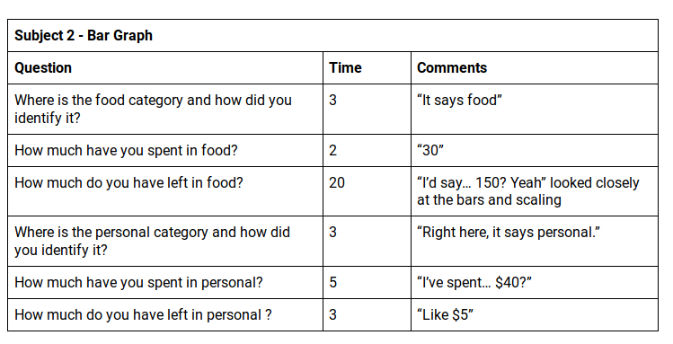
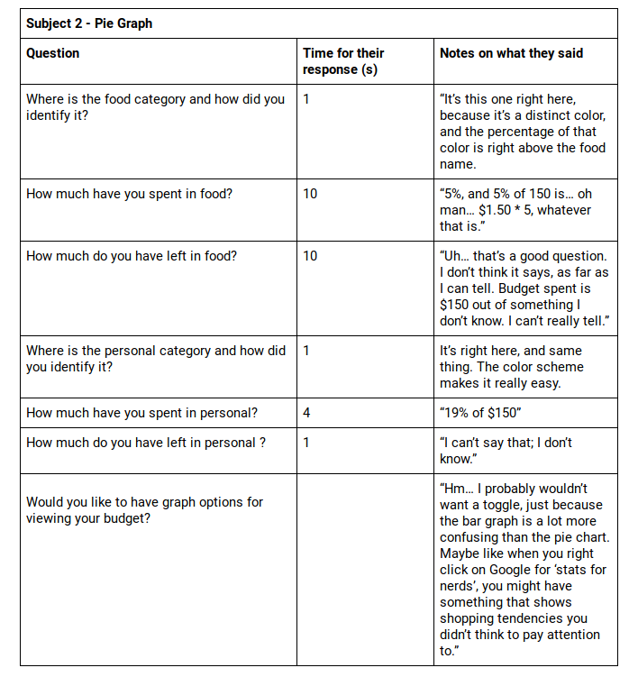
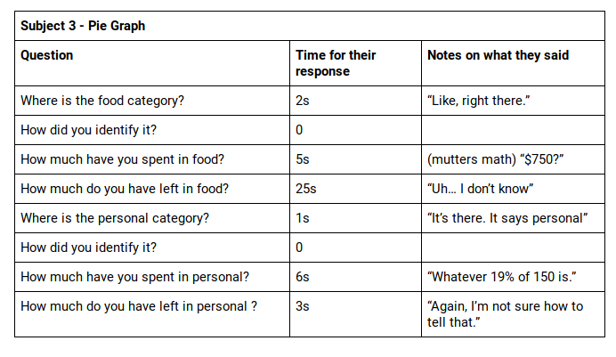
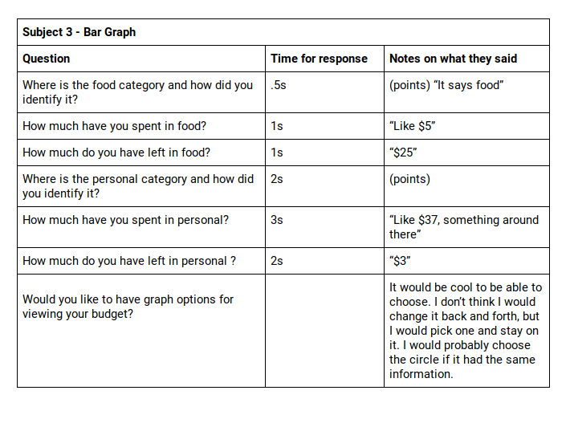

Usability Test Result
Introduction
When displaying data in an app, it’s essential to make it as quick and easy to understand as possible. This is true across use cases and media, and there is an entire field of communication devoted to data visualization. It’s particularly true for a budgeting app, which is data-driven by necessity and targets a wide range of user backgrounds.
For this usability test, we investigated the summary graph displayed on our app’s home page. There are several ways to represent spending over a month — among them, a pie graph or bar graph divided by category — and we were curious which method communicated the information most effectively. This home page graphic is a central part of the app, so it’s essential to provide users a quick understanding of their finances.
What Hypothesis Are We Testing?
The type of graph used for a budgeting summary will affect the speed at which users can understand financial information.
Independent/Dependent Variables
For this study, the independent variable is the type of graph used in the app’s homepage. Although we would want to test a wide range of graph types in a full study, we are only comparing two for the pilot version - bar graph and pie graph.

Study Desgin
Since we are doing a quantitative test, we would normally want to test about 20-40 users so our results are statistically significant. For this pilot test, we are only testing thee users.
All of our users will be young adults aged 18-25 familiar with using a smartphone, consistent with the app’s target user base.
For each user, we will give them an Adobe XD prototype of the app, with either a bar graph or a pie graph containing example data for a month of spending. We will then ask a series of simple questions about the data being displayed (e.g. “How much money have you spent this month in the food category”). The response, as well as the time it took the user to start responding, will be recorded.
Each user will only see one variation of the graph, to avoid improvement based on familiarity with the question types, icons, or type of information being displayed. For the pilot test, since we only have three users, we will show both graphs, but in different orders to minimize this effect.
Script
- Where is the food category and how did you identify it?
- How much have you spent in food?
- How much do you have left in food?
- Where is the personal category and how did you identify it?
- How much have you spent in personal?
- How much do you have left in personal?
- Would you like to have an option of graph for viewing your budget?
Summary of results
It’s worth noting that, since our usability test was only a pilot test with three participants, it’s not useful to generalize these results to our entire target user base. That being said, similar responses between our three participants point to likely areas of concern as we move our design forward.
One similarity between our three tests is that, for simple questions about category names and values, our participants consistently answered within a few seconds for both the pie and bar graphs. This hopefully would remain true with a larger sample size, since it suggests that both graph choices were relatively intuitive and easy to read.
For questions regarding the total budget values of the pie graph, participants took longer to answer and were unable to produce a correct answer. This is because, for the pie graph, this information didn’t exist, and was only expressed in terms of relative spending amounts. For an extended study, we would likely want to test more graph types, including an “exploded’ or “filled” pie chart that would be able to express relative budget and spending amounts.
Some of the free-response answers were also relevant to how we finalize our home page graphic. Of the three participants, two stated that they would like an option for type of graph in the app, while the third would prefer only the pie chart because the bar graph was “too confusing.” It would be interesting to see how these answers changed with a larger set of users.
Moving Forward
Since we weren’t able to prove by a reasonable margin that one graph was more useful than the other, we’re adding a toggle for the next iteration of our app. It’s possible this isn’t the ideal solution, but it was recommended by two of our three study participants and gives the user more flexibility in displaying their data. If we had more time and resources, we would reorganize the study to engage more users and derive quantitative measures that are validated within the UX design community.
Appendix/Transcripts




